Discrete Representation Learning for Chinese Calligraphy Skeletons
From Distance Fields to Conditional Generation
中文書法骨架的離散表示學習
從距離場到條件式生成
從距離場到條件式生成
Abstract
We present a systematic study of discrete representation learning for Chinese calligraphy character skeletons, evaluating six tokenizer architectures and four generation methods on 20,000 characters at 128x128 resolution across 20 experimental phases. After systematically eliminating seven initial approaches and identifying three root causes of failure -- extreme input sparsity (3% foreground pixels), set decomposition collapse, and codebook collapse -- we introduce Euclidean distance field inputs, which improve reconstruction IoU by 12 percentage points. A spatial EMA VQ-VAE with 256 tokens achieves IoU=0.994, matching a continuous baseline with negligible discretization cost. The learned tokens exhibit emergent structural correspondence: linear probes predict stroke count (R2=0.833) and classify IDS layout types at 80.0% accuracy without structural supervision. Cross-font generalization is remarkably strong: a model trained on regular script reconstructs seven unseen fonts -- including cursive and semi-cursive -- with IoU above 0.988. For generation, a hierarchical MaskGIT with coarse (16 tokens) and fine (256 tokens) stages produces structurally valid skeletons with 98.6% single-component connectivity and nearest-neighbor IoU=0.875, while a conditional variant enables radical-level control.
我們針對中文書法字骨架的離散表示學習進行了系統性研究，在 128x128 解析度、20,000 個漢字上，評估六種 tokenizer 架構與四種生成方法，歷經 20 個實驗階段。在系統性排除七種初始方法並辨識出三個失敗根因 -- 極端輸入稀疏性（僅 3% 前景像素）、集合分解崩潰、以及碼本崩潰 -- 之後，我們引入歐幾里得距離場輸入，使重建 IoU 提升 12 個百分點。採用 EMA 更新的 Spatial VQ-VAE（256 個 token）達到 IoU=0.994，在幾乎無離散化代價的情況下追平連續型基準模型。所學習的 token 展現出自然浮現的結構對應關係：線性探測器可預測筆畫數（R2=0.833），並以 80.0% 準確率分類 IDS 結構類型，且完全無需結構監督。跨字體泛化能力極為顯著：僅以楷書訓練的模型，對七種未見字體（包括草書與行書）的重建 IoU 均超過 0.988。在生成方面，採用粗粒度（16 個 token）與細粒度（256 個 token）兩階段的層級式 MaskGIT，可產生結構有效的骨架，連通性達 98.6%，最近鄰 IoU=0.875；而其條件式變體則可實現部首級別的控制。
1. Introduction
Chinese characters constitute one of the most structurally complex writing systems in active use. A single character may comprise anywhere from one to over thirty strokes, organized into radicals and sub-components according to a finite set of spatial layouts codified by Ideographic Description Sequences (IDS). This combinatorial structure -- an estimated 20,000 commonly used characters assembled from roughly 200 radicals via a dozen layout patterns -- makes Chinese writing a compelling testbed for representation learning.
The skeleton of a character -- a one-pixel-wide medial axis extracted from its rendered glyph -- distills stroke geometry to its topological essence, stripping away stylistic variation in stroke width and serif ornamentation. If an unsupervised model can learn discrete tokens from these skeletons that correspond to linguistically meaningful units, such tokens would enable both lossless reconstruction and controllable generation of new characters.
This paper asks four research questions:
- RQ1 (Structure learning): Can a neural network, given only skeleton images, learn representations that reflect stroke-level and radical-level structure?
- RQ2 (Compression): What is the minimum discrete representation that permits near-lossless reconstruction of 128x128 skeleton distance fields?
- RQ3 (Interpretability): Do the learned discrete tokens encode interpretable information about stroke count, radical identity, and IDS layout type?
- RQ4 (Generation): Can the learned token vocabulary serve as the basis for generating new, structurally valid character skeletons?
漢字構成了現今使用中最具結構複雜性的書寫系統之一。單一漢字可能包含一至三十餘筆畫，由部首與子部件按照有限的空間佈局模式組合而成，這些佈局以表意文字描述序列(IDS)加以編碼。這種組合結構 -- 約 20,000 個常用漢字由大約 200 個部首透過十餘種佈局模式組合而成 -- 使中文書寫成為表示學習的理想實驗場域。
漢字的骨架 -- 從其渲染字形提取的單像素寬中軸線 -- 將筆畫幾何精煉為拓撲本質，剝除筆畫寬度和字腳裝飾等風格變化。若無監督模型能從這些骨架學習到對應語言學有意義單元的離散 token，此類 token 將可同時實現無損重建與可控生成。
本論文提出四個研究問題：
- RQ1（結構學習）：神經網路僅給定骨架圖像，能否學習到反映筆畫級別和部首級別結構的表示？
- RQ2（壓縮）：允許近無損重建 128x128 骨架距離場的最小離散表示為何？
- RQ3（可解釋性）：所學習的離散 token 是否編碼了關於筆畫數、部首身分和 IDS 結構類型的可解釋資訊？
- RQ4（生成）：所學習的 token 詞彙能否作為生成新的、結構有效的漢字骨架之基礎？
1.1 The Sparsity Problem and Distance Field Solution
A naive starting point is to apply a standard VQ-VAE to binary skeleton images. We attempted exactly this -- along with six other approaches including slot attention, DETR-style set prediction, graph autoencoders with GAT message passing, autoregressive stroke generators, and semantic tokenizers operating on pretrained features. All seven approaches failed. Through controlled ablation we traced these failures to three root causes:
- Extreme input sparsity. Binary skeletons contain approximately 3% foreground pixels. Convolutional encoders receive near-zero gradients across 97% of the spatial extent. Our best binary-input autoencoder achieved only IoU=0.861.
- Set decomposition collapse. Methods that attempt to decompose a character into an unordered set of parts suffer from assignment collapse: all slots converge to predicting the same global average.
- Codebook collapse. Vector quantization in high-dimensional spaces (e.g., 768-d pretrained features) exhibits severe code collapse, with fewer than 5% of codebook entries receiving any assignments.
The first root cause admits an elegant fix: replacing the binary skeleton with its Euclidean distance transform (EDT). The distance field assigns every pixel a continuous value proportional to its distance from the nearest skeleton pixel, converting a nearly empty image into a dense, smooth signal. This single change increases reconstruction IoU from 0.861 to 0.985 (+12.4 points) under an identical architecture.
一個直觀的起點是將標準 VQ-VAE 直接應用於二值化骨架圖像。我們嘗試了這種做法 -- 連同另外六種方法。七種方法全部失敗。透過受控消融實驗，我們將這些失敗歸因於三個根本原因：
- 極端輸入稀疏性。二值化骨架僅包含約 3% 的前景像素。卷積編碼器在 97% 的空間範圍上接收到接近零的梯度。最佳的二值輸入自編碼器僅達到 IoU=0.861。
- 集合分解崩潰。嘗試將漢字分解為無序部件集合的方法會發生分配崩潰：所有 slot 收斂到預測相同的全域平均值。
- 碼本崩潰。在高維空間中的向量量化出現嚴重的碼本崩潰，不到 5% 的碼本項目獲得任何分配。
第一個根因有一個優雅的解法：以歐幾里得距離變換(EDT)取代二值化骨架。距離場為每個像素賦予一個連續值，將幾乎空白的圖像轉換為密集、平滑的訊號。此一單一改變使重建 IoU 從 0.861 提升至 0.985（+12.4 個百分點）。
1.2 From Reconstruction to Semantic Discovery
With the input representation resolved, we find that a straightforward spatial VQ-VAE with EMA codebook updates, 256 codebook entries, and a CNN encoder-decoder achieves IoU=0.994 on 20,000 held-out test characters -- matching a continuous Spatial VAE baseline and demonstrating that discretization imposes zero reconstruction cost at this token budget.
More surprisingly, the learned tokens exhibit emergent semantic alignment with linguistic structure, despite receiving no supervision beyond pixel-level reconstruction. A linear probe trained on the 256-dimensional token histogram predicts stroke count with R2=0.833 and classifies IDS structural types at 80.0% accuracy (chance: 25%). Position-wise NMI between token assignments and radical labels reaches 0.35. However, codebook-level clustering analysis reveals negative silhouette scores for all models tested, indicating that semantic structure is distributed across token combinations rather than concentrated in individual codebook entries -- combinatorial semantics rather than atomic semantics.
在解決輸入表示問題後，一個簡單直接的 Spatial VQ-VAE -- 採用 EMA 碼本更新、256 個碼本項目、CNN 編碼器-解碼器 -- 在 20,000 個留出測試字上達到 IoU=0.994，追平連續型 Spatial VAE 基準。
更令人驚訝的是，所學習的 token 展現出與語言結構的自然語意對齊，儘管除了像素級重建之外未接受任何監督。線性探測器可以 R2=0.833 預測筆畫數，並以 80.0% 準確率分類 IDS 結構類型。然而，碼本級別的聚類分析揭示所有測試模型的輪廓係數均為負值，表明語意結構分散於 token 組合中 -- 組合式語意而非原子式語意。
1.3 Cross-Font Generalization
We train exclusively on Kai (regular script) and evaluate on seven additional font families spanning the full stylistic spectrum: Song, Ming, Gothic, semi-cursive (xingshu), and cursive (caoshu). All seven unseen fonts achieve reconstruction IoU above 0.988, with the largest drop measuring only 0.57 percentage points. This robustness stems from the skeleton representation itself: morphological thinning strips away font-specific decoration, and the subsequent distance field transform further smooths inter-font variation.
我們僅以楷書訓練，並在另外七個字體家族上進行評估。所有七種未見字體的重建 IoU 均超過 0.988，最大降幅僅為 0.57 個百分點。此穩健性源於骨架表示本身：形態學細化剝除了字體特有的裝飾，而後續的距離場變換進一步平滑了字體間的差異。
1.4 Discrete Tokens Enable Generation
We evaluate four generation approaches: unconditional MaskGIT, conditional MaskGIT with radical embeddings, hierarchical two-stage MaskGIT (coarse 16-token structure followed by fine 256-token detail), and latent diffusion on continuous spatial features. The hierarchical MaskGIT achieves the best results: nearest-neighbor IoU of 0.875 and 98.6% single-connected-component rate. The conditional variant successfully controls radical placement -- per-radical generation grids confirm that conditioned outputs consistently exhibit the correct sub-component structure.
我們評估四種生成方法：無條件 MaskGIT、條件式 MaskGIT、層級式雙階段 MaskGIT、以及潛在擴散模型。層級式 MaskGIT 取得最佳結果：最近鄰 IoU 為 0.875，連通性達 98.6%。條件式變體成功控制了部首放置，逐部首生成網格證實條件化輸出一致展現正確的子部件結構。
1.5 Contributions
- Systematic negative results. We document seven failed approaches (P0--P7) and identify three root causes -- input sparsity, set decomposition collapse, and codebook collapse.
- Distance field as input representation. Replacing binary skeletons with EDT yields a +12-point IoU improvement.
- Emergent semantic structure. Without linguistic supervision, spatial VQ tokens predict stroke count (R2=0.833), classify structural types (80.0%), and correlate with radical identity (NMI=0.35).
- Hierarchical masked generation. A two-stage MaskGIT generates structurally valid skeletons (98.6% connected, NN IoU=0.875) with conditional radical control.
- 系統性負面結果。我們記錄了七種失敗方法（P0--P7）並辨識出三個根因。
- 距離場作為輸入表示。以 EDT 取代二值化骨架產生 +12 個百分點的 IoU 提升。
- 自然浮現語意結構。在無語言學監督下，空間 VQ token 可預測筆畫數（R2=0.833）、分類結構類型（80.0%）、並與部首身分相關（NMI=0.35）。
- 層級式遮罩生成。雙階段 MaskGIT 生成結構有效的骨架（98.6% 連通、NN IoU=0.875），並支援條件式控制。
2. Related Work
2.1 Vector Quantized Autoencoders
VQ-VAE introduced learning a discrete latent space by mapping encoder outputs to the nearest codebook entry via the straight-through estimator. VQ-VAE-2 extends this to a two-level hierarchical structure: a coarse top-level codebook captures global layout and a fine bottom-level codebook captures local detail. VQGAN augments the decoder with a PatchGAN discriminator. MAGVIT-v2 introduces lookup-free quantization with entropy-based regularization. FSQ proposes implicit codebooks via per-dimension rounding. TiTok produces as few as 32 tokens per image using a 1D latent sequence.
2.2 CJK Character Generation
zi2zi pioneered conditional GANs for CJK font style transfer. FontDiffuser applies diffusion to few-shot font generation. Component-based methods (RD-GAN, DG-Font, CG-GAN) decompose characters into radicals but require explicit annotations. Our VQ-VAE discovers discrete sub-units in a purely unsupervised manner from skeleton images.
2.3 Skeleton and Stroke Representation
Skeleton extraction via morphological thinning is a classical technique. Neural approaches (DeepSVG, Im2Vec, SketchRNN) operate on explicit stroke sequences. Our work differs fundamentally: we operate on the distance field of the skeleton image, treating the entire character as a single dense signal, avoiding stroke segmentation and ordering problems.
2.4 Discrete Image Generation
DALL-E and Parti generate images by autoregressively predicting VQ tokens. MaskGIT introduces non-autoregressive masked prediction with iterative parallel decoding. VAR proposes coarse-to-fine autoregressive generation. We adopt MaskGIT's parallel decoding in both stages of our hierarchical generator, with classifier-free guidance (CFG) for conditional generation.
2.1 向量量化自編碼器
VQ-VAE 提出透過直通估計器將編碼器輸出映射至最近碼本項目來學習離散潛在空間。VQ-VAE-2 擴展為兩層層級結構。VQGAN 以 PatchGAN 鑑別器增強解碼器。MAGVIT-v2 引入免查表量化與基於熵的正則化。FSQ 提出透過各維度四捨五入的隱式碼本。TiTok 對每張圖像僅產生 32 個 token。
2.2 CJK 字元生成
zi2zi 率先將條件式 GAN 應用於 CJK 字體風格轉換。FontDiffuser 將擴散應用於少樣本字體生成。基於部件的方法（RD-GAN、DG-Font、CG-GAN）將漢字分解為部首但需要顯式標注。我們的 VQ-VAE 從骨架圖像以完全無監督方式發現離散子單元。
2.3 骨架與筆畫表示
透過形態學細化進行骨架提取是經典技術。神經方法（DeepSVG、Im2Vec、SketchRNN）操作在顯式筆畫序列上。我們的工作根本不同：操作在骨架圖像的距離場上，將整個字元視為單一密集訊號。
2.4 離散圖像生成
DALL-E 和 Parti 以自迴歸方式預測 VQ token。MaskGIT 引入非自迴歸遮罩預測。VAR 提出由粗到細的自迴歸方案。我們在層級式生成器的兩個階段均採用 MaskGIT 的平行解碼，並使用 CFG 進行條件式生成。
3. Method
Our method comprises four stages: (1) a data pipeline that converts TrueType font files into skeleton distance fields; (2) a spatial VQ-VAE that learns a discrete codebook over 16x16 spatial token grids; (3) an optional hierarchical extension with coarse-to-fine quantization and multi-task semantic heads; and (4) a hierarchical MaskGIT that generates new characters by iteratively predicting token sequences.
我們的方法包含四個階段：(1) 將 TrueType 字型檔轉換為骨架距離場的資料管道；(2) 在 16x16 空間 token 網格上學習離散碼本的 Spatial VQ-VAE；(3) 具有粗到細量化與多任務語意頭的可選層級式擴展；以及 (4) 透過迭代預測 token 序列來生成新字元的層級式 MaskGIT。
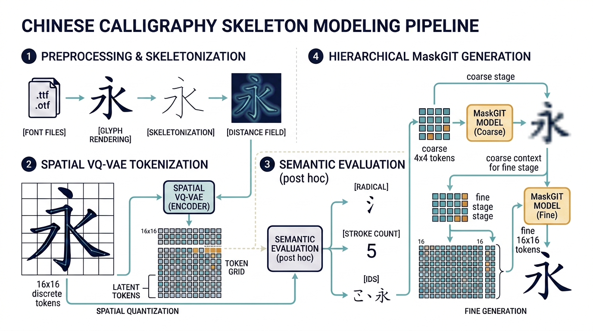
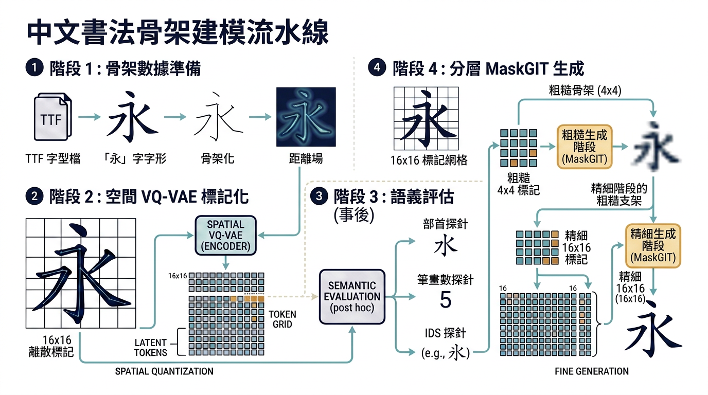
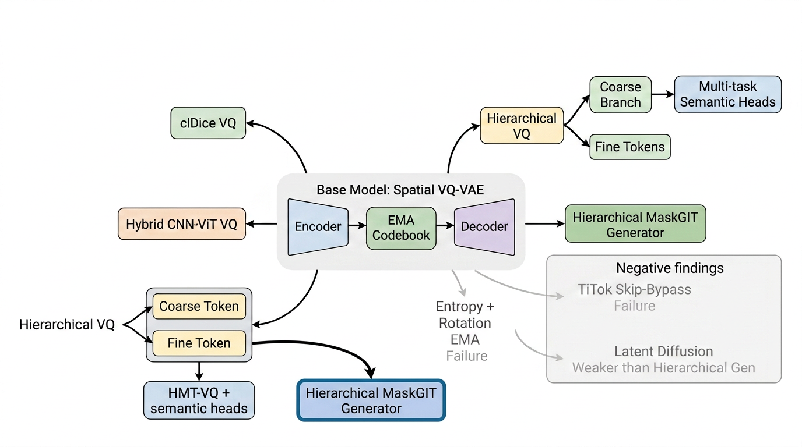
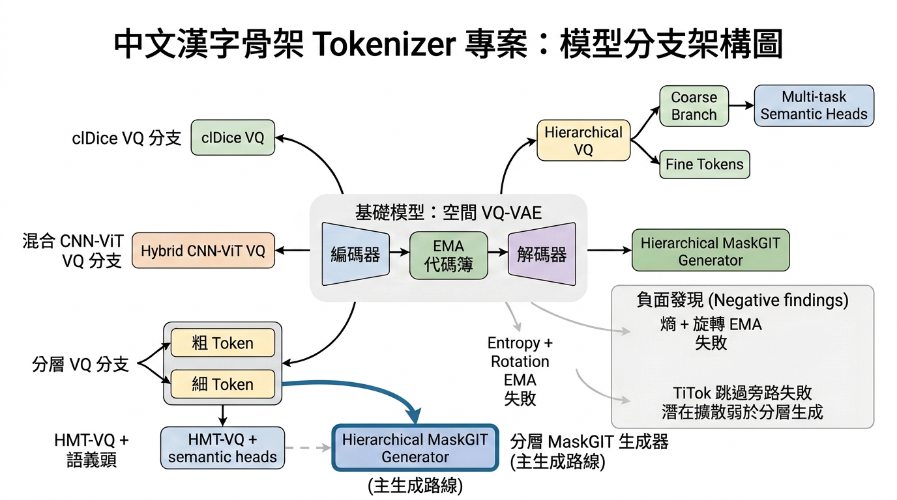
3.1 Data Pipeline
Glyph rendering. We render 20,000 Chinese characters from TW-Kai (regular script) at 128x128 resolution. Skeletonization. Each glyph is binarized and reduced to a one-pixel-wide skeleton via morphological thinning. Distance field transform. Binary skeletons (~3% foreground) are converted to dense distance fields via EDT, clamped at dmax=16, normalized to [0,1], and inverted. Data splitting. Characters sorted by Unicode codepoint, split deterministically 80/10/10 (16K/2K/2K).
字形渲染。從 TW-Kai 楷書渲染 20,000 個漢字，解析度 128x128。骨架化。每個字形二值化後以形態學細化縮減為單像素寬骨架。距離場變換。二值化骨架（~3% 前景）透過 EDT 轉換為密集距離場，截斷於 dmax=16，正規化至 [0,1] 並反轉。資料分割。按 Unicode 碼位排序，確定性分割 80/10/10。
3.2 Spatial VQ-VAE
The core tokenizer encodes each 128x128 distance field into a 16x16 grid of 256 discrete tokens. The encoder uses three stride-2 convolution stages with channel progression [32, 64, 128], producing a (B, 128, 16, 16) feature map -- no global pooling. Vector quantization: each spatial position is independently quantized using a shared EMA codebook (K=512, D=128). Gradients pass through via the straight-through estimator. Dead code revival replaces underutilized entries (cluster size < 1.0) with random encoder outputs. The decoder mirrors the encoder with transposed convolutions and sigmoid output.
核心 tokenizer 將每張 128x128 距離場編碼為 16x16 的 256 個離散 token 網格。編碼器使用三個步幅 2 卷積階段，通道遞進 [32, 64, 128]，不施加全域池化。向量量化：每個空間位置使用共享 EMA 碼本（K=512, D=128）獨立量化。死碼復活以隨機編碼器輸出替換低使用率項目。解碼器以轉置卷積鏡像編碼器。
3.3 Hierarchical VQ-VAE
A two-level extension: Coarse branch -- average pool the encoder features to 4x4 (16 positions), quantize with Kcoarse=64 entries. Fine branch -- conditioned on upsampled coarse features via residual addition: hfine = h + Wcond · upsample(zq,coarse). Fine codebook has Kfine=512 entries. Total token budget: 16 + 256 = 272 tokens per character. The 16 coarse tokens naturally partition the character into a 4x4 grid where each cell spans a 32x32 pixel region.
兩層擴展：粗粒度分支 -- 將編碼器特徵平均池化至 4x4（16 個位置），以 Kcoarse=64 項目量化。細粒度分支 -- 以上採樣的粗粒度特徵殘差加法為條件。細粒度碼本有 Kfine=512 項目。每個字元共 16 + 256 = 272 個 token。
3.4 Multi-Task Semantic Heads
Three lightweight heads operate on the globally-averaged quantized features: (1) Radical classification -- 2-layer MLP (128 → 256 → 267) with cross-entropy loss; (2) Stroke count regression -- 2-layer MLP with Huber loss; (3) IDS structure classification -- 2-layer MLP (128 → 256 → 5) with cross-entropy loss. Gradients from classification losses pass through the STE to shape the codebook toward linguistically meaningful entries.
三個輕量頭操作在全域平均量化特徵上：(1) 部首分類 -- 兩層 MLP（128 → 256 → 267），交叉熵損失；(2) 筆畫數迴歸 -- 兩層 MLP，Huber 損失；(3) IDS 結構分類 -- 兩層 MLP（128 → 256 → 5），交叉熵損失。分類損失的梯度透過 STE 傳遞，塑造碼本朝語言學有意義的方向。
3.5 Hierarchical MaskGIT
A two-stage generator: Coarse stage -- bidirectional Transformer (dim=256, 4 heads, 4 layers) on 16-token sequences with learned 2D positional embeddings. Fine stage -- larger Transformer (dim=512, 8 heads, 8 layers) on 256-token sequences, conditioned on coarse tokens via spatially-varying additive embedding. Both stages support optional radical conditioning with CFG (guidance scale 3.0, drop rate 0.1). Iterative parallel decoding: 8 steps for coarse, 12 for fine. At each step, predict all positions, accept most confident predictions per cosine schedule, re-mask the rest.
兩階段生成器：粗粒度階段 -- 雙向 Transformer（dim=256, 4 頭, 4 層）操作 16-token 序列。細粒度階段 -- 更大的 Transformer（dim=512, 8 頭, 8 層）操作 256-token 序列，以粗粒度 token 為條件。兩階段均支援部首條件式生成與 CFG（引導比例 3.0）。迭代平行解碼：粗粒度 8 步，細粒度 12 步。
3.6 Evaluation Protocol
We evaluate along three axes: Reconstruction -- IoU (binarized at 0.5), codebook perplexity, codebook usage. Semantic interpretability -- position-wise NMI (token-radical correlation at each of 256 positions), stroke count R2 (linear probe on token histograms), IDS classification accuracy. Generation quality -- nearest-neighbor IoU (against training set), connectivity (single-CC ratio), MMD (RBF kernel, median heuristic), novelty and diversity in feature space.
我們從三個軸向評估：重建 -- IoU、碼本困惑度、碼本使用率。語意可解釋性 -- 逐位置 NMI、筆畫數 R2、IDS 分類準確率。生成品質 -- 最近鄰 IoU、連通性、MMD、新穎性與多樣性。
4. Experiments
4.1 Implementation Details
Dataset: 20,000 Chinese characters from TW-Kai at 128x128, split 16K/2K/2K by Unicode codepoint order. Hardware: Development on Mac Apple Silicon (MPS); production training on dual NVIDIA RTX 3090 via Tailscale SSH (~2 hours per 300 epochs). Optimization: AdamW, lr=3e-4, weight decay=1e-4, cosine annealing with 10-epoch warmup, gradient clip=1.0, batch size 32, seed 42.
資料集：20,000 個漢字，TW-Kai 楷書，128x128，按 Unicode 碼位排序分割 16K/2K/2K。硬體：Mac Apple Silicon 開發；雙 RTX 3090 訓練（每 300 epochs 約 2 小時）。優化：AdamW, lr=3e-4, cosine annealing, 10-epoch warmup, 梯度截斷=1.0。
4.2 Systematic Elimination of Alternative Approaches (P0--P7)
Before arriving at our final architecture, we conducted a systematic study of seven alternative approaches. Each approach was given a fair trial with hyperparameter sweeps and architecture variants, and each failed for identifiable reasons.
在確定最終架構之前，我們對七種替代方法進行了系統性研究。每種方法都給予了公平的試驗機會，且每種方法都因可辨識的原因而失敗。
| Phase | Method | Best Metric | Failure Mode | Root Cause |
|---|---|---|---|---|
| P0 | Binary VQ-VAE | IoU = 0.861 | Near-zero gradients on 97% of pixels | Sparsity |
| P1 | Slot Attention | All slots identical | Assignment collapse: all slots predict global mean | Set collapse |
| P2 | DETR-style set prediction | All queries identical | Hungarian matching cannot break symmetry | Set collapse |
| P3 | Graph Autoencoder (GAT) | F1 = 0.72 | No pixel-level decoder | Repr. gap |
| P4 | Autoregressive stroke gen. | Count diverges | No natural stroke ordering | Set collapse |
| P5 | Keypoint Transformer + CE | Acc = 58% | Sparse keypoints lose spatial context | Sparsity |
| P6 | Semantic tokenizer | Usage < 5% | 768-d features cause code collapse | Codebook collapse |
| P7 | Keypoint + Chamfer | L1 = 2.8 | Chamfer loss noisy for sparse points | Sparsity |
4.3 Distance Field Breakthrough (P8)
The key insight: replacing binary skeleton images with their Euclidean distance fields. Under an identical architecture, this single input transformation improved IoU from 0.861 to 0.985 -- a gain of 12.4 percentage points.
關鍵洞察：以歐幾里得距離場取代二值化骨架圖像。在完全相同的架構下，這一單一輸入變換使 IoU 從 0.861 提升至 0.985 -- 提高 12.4 個百分點。
| Input Representation | IoU | Foreground Coverage | Gradient Signal |
|---|---|---|---|
| Binary skeleton | 0.861 | 3% | Sparse (near-zero on 97%) |
| Distance field (EDT, dmax=16) | 0.985 | 100% | Dense (every pixel contributes) |
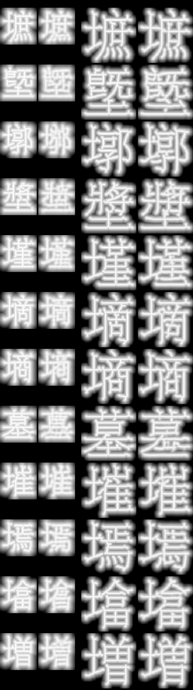
4.4 Tokenizer Architecture Comparison (P16)
Comprehensive comparison of six tokenizer architectures at 128x128 on 20,000 characters. All discrete methods use a 16x16 spatial grid (256 token positions) and codebook dimension D=128.
在 128x128、20,000 個漢字上全面比較六種 tokenizer 架構。所有離散方法使用 16x16 空間網格（256 個 token 位置），碼本維度 D=128。
| Method | Type | Tokens | IoU | PPL | Usage | Stroke R2 | IDS Acc |
|---|---|---|---|---|---|---|---|
| EMA VQ 256-tok | Discrete | 256 | 0.994 | 331 | 96% | 0.833 | 80.0% |
| Hybrid CNN-ViT VQ | Discrete | 256 | 0.994 | 324 | 94% | 0.819 | 76.2% |
| Hierarchical VQ | Discrete | 16+256 | 0.993 | 347 | 96% | 0.821 | 78.2% |
| Multi-Task VQ | Discrete | 256 | 0.993 | 387 | 99% | --- | 77.0% |
| LFQ 256-tok | Discrete | 256 | 0.992 | 320 | 96% | 0.758 | 73.8% |
| clDice VQ v2 | Discrete | 256 | 0.989 | 345 | 98% | 0.829 | 79.6% |
| VQ-GAN 64-tok | Discrete | 64 | 0.951 | --- | 72% | 0.789 | 79.5% |
| Spatial VAE (ref) | Continuous | --- | 0.994 | --- | --- | 0.697 | 77.6% |
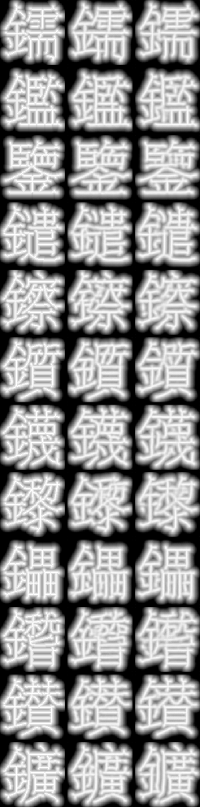
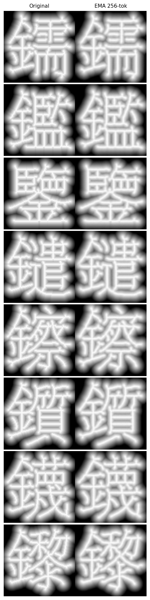
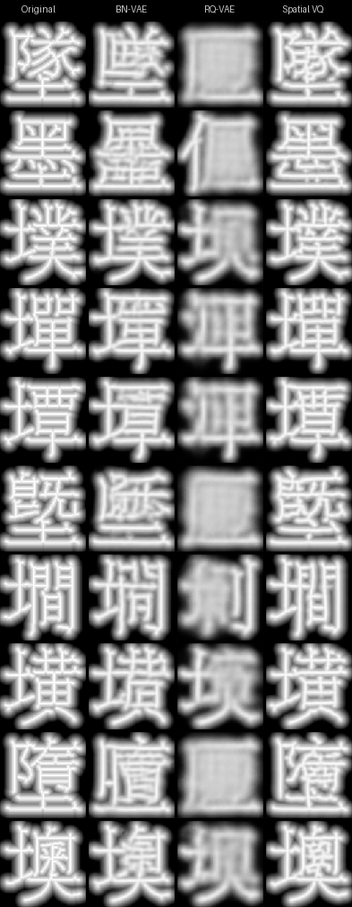
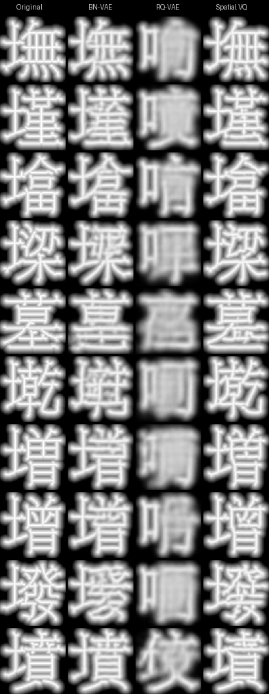
4.5 Multi-Seed Validation (P17)
All models exhibit IoU variance below 0.001 across seeds (42, 123, 456), with semantic probe metrics varying by less than 1 percentage point. The ranking of methods is consistent across seeds.
所有模型在不同種子（42, 123, 456）間的 IoU 變異量低於 0.001，語意探測指標變異不到 1 個百分點。方法排名在種子間保持一致。
| Model | Seed | IoU | Usage | Stroke R2 | IDS Acc |
|---|---|---|---|---|---|
| EMA 256-tok | 42 | 0.994 | 97.1% | 0.833 | 80.0% |
| EMA 256-tok | 123 | 0.9945 | 97.1% | 0.826 | 78.5% |
| EMA 256-tok | 456 | 0.9942 | 97.7% | 0.822 | 78.6% |
| clDice v2 | 123 | 0.9886 | 97.0% | 0.829 | 78.1% |
| clDice v2 | 456 | 0.9883 | 97.2% | 0.823 | 77.8% |
| Hierarchical VQ | 123 | 0.9934 | 94.8% | 0.812 | 78.6% |
| Hierarchical VQ | 456 | 0.9935 | 94.6% | 0.831 | 77.1% |
| Hybrid ViT | 123 | 0.9946 | 94.1% | 0.810 | 76.2% |
| Hybrid ViT | 456 | 0.9950 | --- | 0.822 | --- |
4.6 Cross-Font Generalization (P17)
A model trained exclusively on Kai reconstructs characters in seven unseen font families -- including cursive -- with IoU above 0.988. The degradation is monotonic with stylistic distance from regular script.
僅以楷書訓練的模型在七種未見字體上重建漢字，IoU 均超過 0.988。降幅與風格距離呈單調關係。
| Font | Style | IoU | vs Kai | N chars |
|---|---|---|---|---|
| Kai (train) | Regular | 0.9944 | --- | 2,000 |
| Serif (Noto) | Ming | 0.9936 | -0.08 pt | 20,000 |
| Sung | Song | 0.9934 | -0.10 pt | 20,000 |
| Sans (Noto) | Gothic | 0.9927 | -0.17 pt | 20,000 |
| LongCang | Xingshu | 0.9907 | -0.37 pt | 6,556 |
| ZhiMangXing | Xingshu | 0.9900 | -0.44 pt | 6,556 |
| LiuJianMaoCao | Caoshu | 0.9891 | -0.53 pt | 6,556 |
| MaShanZheng | Xingkai | 0.9887 | -0.57 pt | 20,000 |
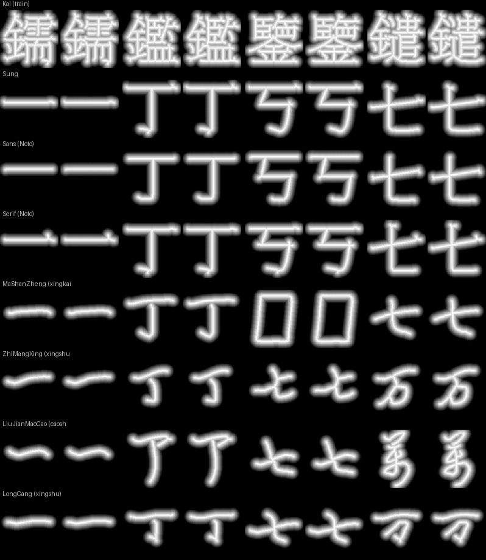
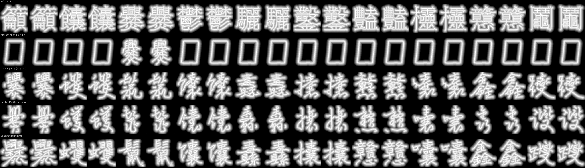
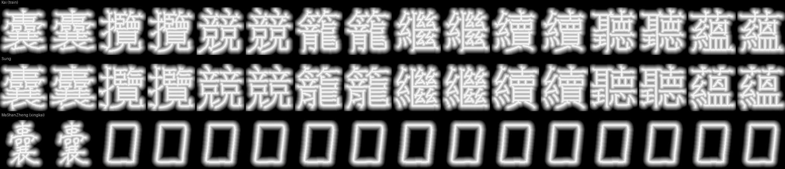
4.7 Semantic Analysis (P17)
Position-wise analysis: at each of 256 spatial positions, we measure the NMI between token assignment and radical label. All models achieve position-wise NMI significantly above zero (0.307--0.361), confirming emergent radical correspondence.
逐位置分析：在 256 個空間位置的每一個上，我們測量 token 分配與部首標籤之間的 NMI。所有模型的逐位置 NMI 顯著高於零（0.307--0.361），確認了自然浮現的部首對應關係。
| Model | Pos NMI (Radical) | Pos NMI (IDS) | Ablation ΔIoU | Sep Ratio | Silhouette |
|---|---|---|---|---|---|
| Multi-Task VQ | 0.361 | 0.110 | 0.000779 | 1.247 | -0.571 |
| clDice v2 (s123) | 0.353 | 0.102 | 0.000708 | 1.228 | -0.175 |
| EMA 256-tok (s123) | 0.351 | 0.102 | 0.000768 | 1.234 | -0.354 |
| EMA baseline (s42) | 0.350 | 0.103 | 0.000814 | 1.318 | -0.613 |
| Hybrid ViT (s123) | 0.311 | 0.087 | 0.000711 | 1.187 | -0.367 |
| Hierarchical (s123) | 0.307 | 0.088 | 0.000671 | 1.181 | -0.601 |
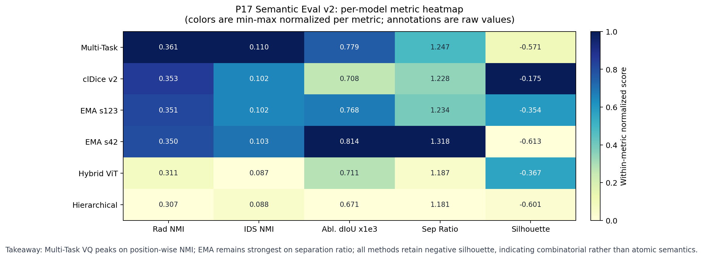
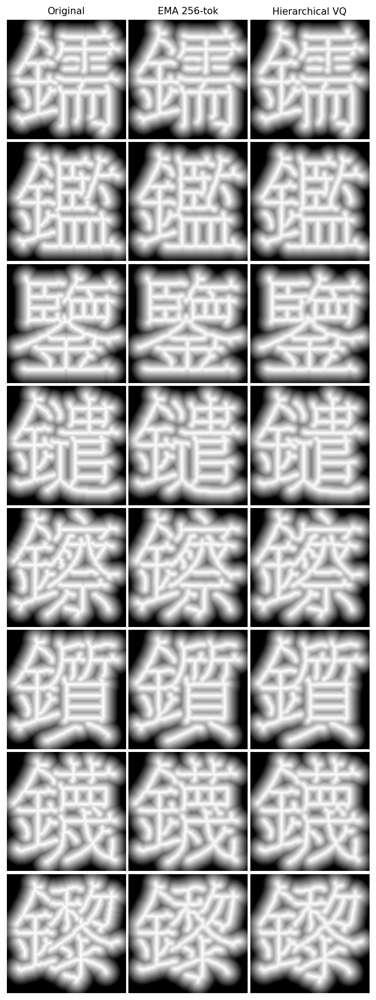
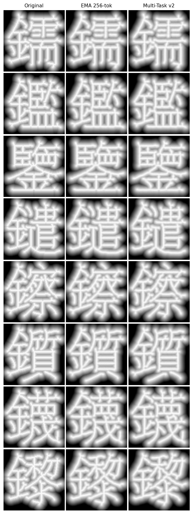
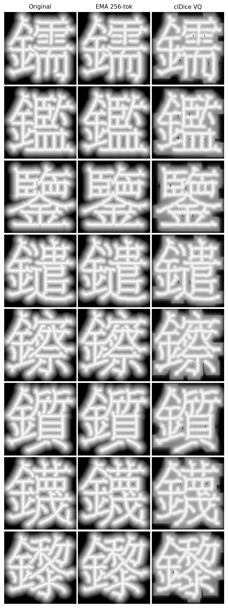
4.8 Generation Experiments (P18)
Four generation approaches, all using the same frozen EMA VQ 256-tok tokenizer (IoU=0.994). All evaluated under a unified protocol: 500 generated samples, same metric suite, median-heuristic bandwidth for MMD.
四種生成方法，均使用相同的凍結 EMA VQ 256-tok tokenizer（IoU=0.994）。統一評估協議：500 個生成樣本、相同指標套件、中位數啟發式 MMD 頻寬。
| Method | NN IoU | Conn% | Novelty | Diversity | MMD |
|---|---|---|---|---|---|
| Hierarchical MaskGIT | 0.875 | 98.6% | 0.962 | 0.060 | 0.040 |
| Cond MaskGIT 256-tok | 0.848 | 72.0% | 0.965 | 0.060 | 0.042 |
| Uncond MaskGIT 256-tok | 0.823 | 69.6% | 0.965 | 0.063 | 0.050 |
| Spatial LDM v2 | 0.775 | 44.0% | 0.946 | 0.077 | 0.080 |
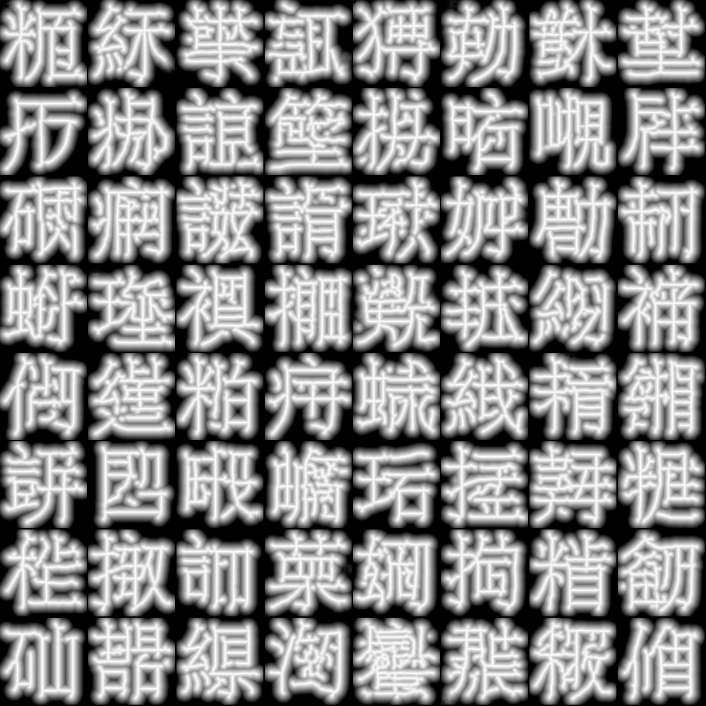
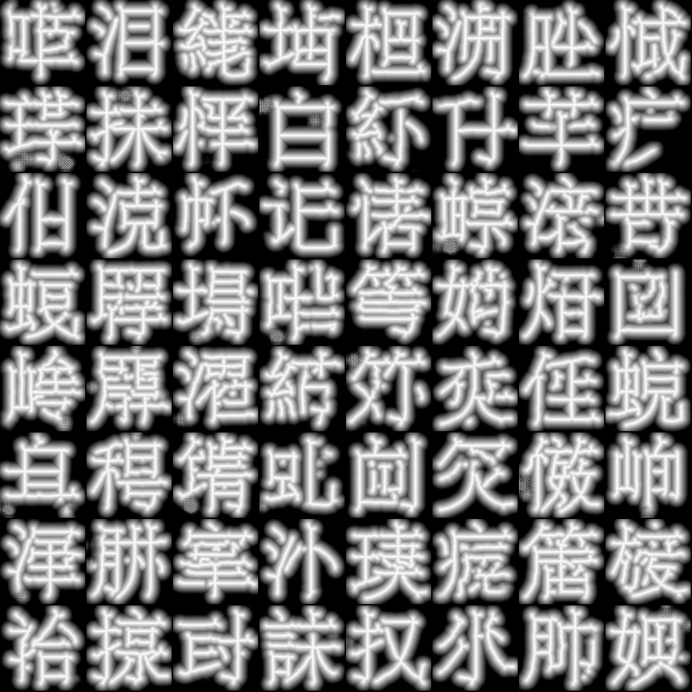
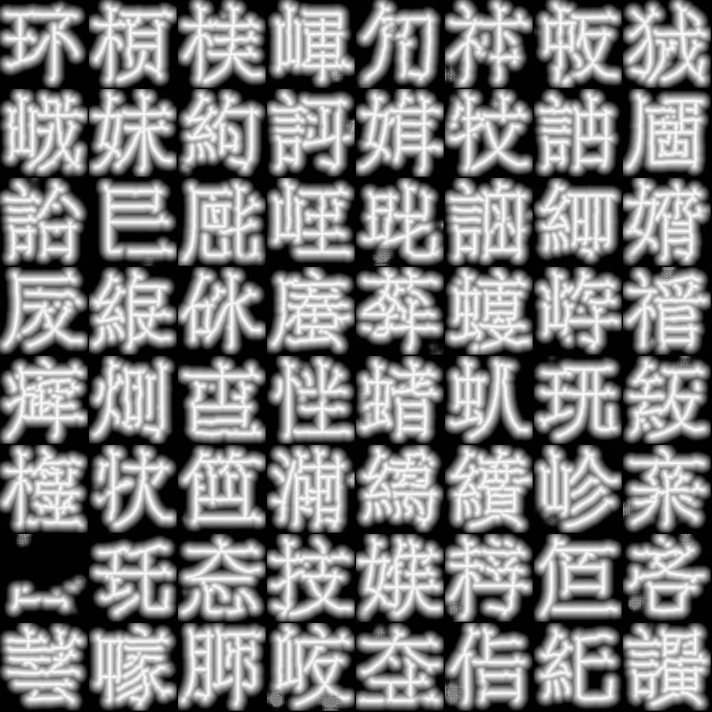
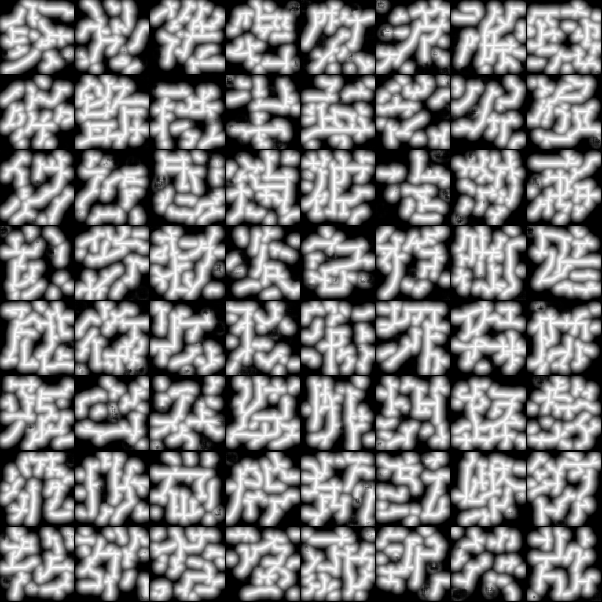
4.9 Tokenizer Exploration (P19)
Three directions explored: the tested EMA + rotation+entropy recipe (which degraded both IoU and PPL), hierarchical multi-task VQ (which improves utilization but weakens fine-level NMI), and TiTok (which achieves IoU=0.999 only when skip connections bypass the bottleneck).
探索三個方向：目前測試失敗的 EMA + rotation+entropy 組合、提升使用率但削弱細粒度 NMI 的層級式多任務 VQ、以及只在 skip connection 繞過瓶頸時才達到 IoU=0.999 的 TiTok。
| Method | IoU | PPL/K | NMI (Radical) | Note |
|---|---|---|---|---|
| EMA baseline | 0.994 | 64.6% | 0.350 | Reference |
| EMA + rotation+entropy (λ=0.01--0.5) | < 0.994 | < 64.6% | --- | Combined variant degrades IoU and PPL |
| HMT-VQ | 0.994 | 70.4% | 0.323 | +6pt PPL/K but -2.7pt NMI |
| HMT-VQ + semantic heads | 0.992 | 72.1% | 0.328 | Coarse NMI improves; fine NMI does not |
| TiTok (with skip) | 0.999 | 26.4% | --- | Skip connection bypasses VQ |
| TiTok (no skip) | 0.880 | 4.3% | --- | Severe codebook collapse |
| TiTok (scheduled skip) | 0.157 | 32.9% | --- | Collapsed during skip annealing |
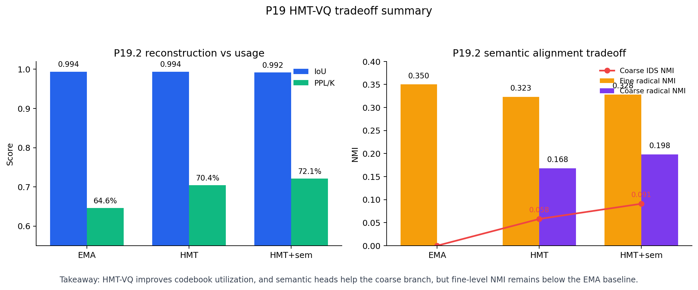
5. Discussion
The experimental journey from P0 to P19 reveals a consistent pattern: the most impactful decisions were about representation, not architecture. Distance fields transformed an impossible sparse problem into a routine dense one. Hierarchical token decomposition made generation structurally reliable. Meanwhile, the most sophisticated architectural additions -- ViT encoders, multi-task heads, non-spatial Perceiver tokenizers -- yielded diminishing or negative returns. This section distills the key insights.
從 P0 到 P19 的實驗旅程揭示一個一致的規律：最具影響力的決策是關於表示而非架構。距離場將不可能的稀疏問題轉化為常規的密集問題。層級式 token 分解使生成結構可靠。同時，最精緻的架構改動 -- ViT 編碼器、多任務頭、非空間 Perceiver tokenizer -- 回報遞減甚至為負。本節提煉關鍵洞察。
5.0 Evaluation Methodology: How Semantic Metrics Are Computed
Stroke R2 (coefficient of determination). For each character, the VQ encoder produces 256 spatial token indices. We convert these into a K=512-dimensional frequency histogram (counting how often each codebook entry appears, normalized by 256). A Ridge regression model (sklearn, alpha=1.0) is trained on the train-split histograms to predict stroke count (integer, range 1--32) from the character annotation database. R2 is evaluated on the held-out test split using sklearn's r2_score: R2 = 1 - SSres/SStot. R2=0.833 means the histogram features explain 83.3% of stroke count variance -- a simple linear model on discrete token statistics alone can accurately predict character complexity.
IDS Structure Accuracy. Each character's Ideographic Description Sequence (IDS) begins with a layout operator: ⿰ (left-right), ⿱ (top-bottom), ⿲ (left-middle-right), ⿳ (top-middle-bottom), ⿴--⿺ (various enclosures mapped to "surround"), and ⿻ (overlap). This yields 5--6 structural classes. A LogisticRegression classifier (sklearn, max_iter=2000) is trained on the same K=512 histogram features from the train split and evaluated on the test split with accuracy_score. 80.0% accuracy means a linear classifier on token histograms can correctly identify whether a character has left-right, top-bottom, or enclosure structure four times out of five.
Key protocol properties: (1) Strict train/test separation -- no data leakage. (2) Linear probes only -- we test the representation quality, not the probe's capacity. (3) Histogram features discard spatial position -- the metrics reflect token distribution patterns, not spatial arrangement.
筆畫數 R2（決定係數）。對每個字元，VQ encoder 產生 256 個空間 token 索引。我們將其轉換為 K=512 維頻率直方圖（統計每個碼本項目出現次數，除以 256 正規化）。使用 Ridge 迴歸模型（sklearn, alpha=1.0）在訓練集直方圖上訓練，預測標注資料庫中的筆畫數（整數，範圍 1--32）。R2 在 held-out 測試集上以 sklearn 的 r2_score 評估：R2 = 1 - SSres/SStot。R2=0.833 意味著直方圖特徵能解釋 83.3% 的筆畫數變異 -- 僅用離散 token 統計的簡單線性模型就能準確預測字元複雜度。
IDS 結構準確率。每個字元的表意文字描述序列（IDS）以佈局運算子開頭：⿰（左右）、⿱（上下）、⿲（左中右）、⿳（上中下）、⿴--⿺（各種包圍結構統一為 "surround"）、⿻（重疊），共 5--6 個結構類別。使用 LogisticRegression 分類器（sklearn, max_iter=2000）在相同的 K=512 直方圖特徵上訓練，在測試集上以 accuracy_score 評估。80.0% 準確率意味著，僅用 token 直方圖的線性分類器就能在五次中正確判斷四次一個字是左右結構、上下結構還是包圍結構。
關鍵協議特性：(1) 嚴格訓練/測試分離 -- 無資料洩漏。(2) 僅線性探測器 -- 測試的是表示品質而非探測器能力。(3) 直方圖特徵丟棄空間位置 -- 指標反映 token 分佈模式而非空間排列。
5.0b Design Decisions: Expectations vs. Reality
A central contribution of this work is the systematic evaluation of 10 major design decisions. The following table summarizes the motivation behind each module, what we expected, and what actually happened.
本工作的核心貢獻之一是對 10 個主要設計決策的系統性評估。下表總結每個模組的設計動機、預期效果與實際結果。
| Module (Phase) | Design Motivation | Expected Outcome | Actual Outcome | Verdict |
|---|---|---|---|---|
| Distance Field (P8) | Skeleton has only 3% foreground; CNN gradients are near-zero | Dense gradient signal improves reconstruction | IoU 0.861 → 0.985 (+12.4pt) | ✓ Exceeded expectations; became system cornerstone |
| EMA VQ 256-tok (P13-P16) | Discretize continuous latent to support token-based generation | Typical VQ gap: ~1-3pt IoU loss | IoU=0.994, matching continuous VAE (zero gap) | ✓ Surprisingly zero discretization cost |
| Hierarchical VQ (P17) | Coarse tokens capture global layout, fine tokens capture strokes | Better semantic separation (coarse=radical, fine=stroke) | IoU=0.993 maintained, but fine NMI decreased -2.7pt vs EMA | ∼ Helps generation (98.6% connected) but no automatic semantic gain |
| Multi-Task VQ (P17) | Semantic classification heads force VQ to preserve radical/stroke/IDS info | Large NMI and radical accuracy improvement | NMI +3% (0.350→0.361); radical acc overfits (train 12.7%, val 0%) | ∼ Marginal gain; semantic ceiling not broken |
| Hybrid CNN-ViT (P17) | Transformer attention increases global receptive field for complex chars | Better reconstruction + stronger semantics on complex chars | IoU=0.995 (highest), but NMI=0.311 (lowest) | ∼ Best reconstruction, weakest semantics; CNN locality bias helps NMI |
| clDice Topology Loss (P17) | Preserve skeleton connectivity via topology-aware loss | IoU + connectivity both improve | IoU decreased 0.6pt; connectivity not significantly improved | ✗ Distance field already encodes topology; redundant |
| Hierarchical MaskGIT (P18) | Generate global structure first (16 coarse tokens), then fill details (256 fine) | Better structural completeness than flat generation | Connectivity 72%→98.6% (+26pt); NN IoU 0.823→0.875 | ✓ Far exceeded expectations; coarse-to-fine is key to generation |
| Entropy Regularization (P19) | MAGVIT-v2 technique: improve codebook usage uniformity | PPL/K 64%→80%+ | PPL and IoU both degraded at all λ values | ✗ Entropy loss interferes with EMA codebook update mechanism |
| HMT-VQ Unified (P19) | Combine Hierarchical + Semantic heads in one end-to-end model | Unified solution for reconstruction + semantics + generation | PPL/K +6pt, but fine NMI -2.7pt; semantic heads help coarse only | ∼ Partially successful; VQ-VAE-2 conditioning blocks gradient flow to fine level |
| TiTok Non-Spatial (P19) | 1D tokens may learn semantic clusters automatically (not tied to spatial grid) | 64 tokens with IoU≥0.99 + semantic breakthrough | IoU=0.999 but VQ is decorative (random tokens = normal tokens) | ✗ Skip connection bypasses VQ; compression vs. VQ necessity trade-off |
5.1 Why Distance Fields Work
The EDT converts a nearly empty image into a dense, smooth signal with three key properties: (1) Density -- 100% foreground coverage, providing gradient signal everywhere; (2) Determinism and invertibility -- no learned parameters, exactly invertible by thresholding; (3) Smoothness -- Lipschitz-continuous with constant 1, making it a well-behaved MSE target. This approach generalizes to any sparse binary image domain: circuit boards, floor plans, road networks, vascular trees.
EDT 將幾乎空白的圖像轉換為密集、平滑的訊號，具有三個關鍵特性：(1) 密集性 -- 100% 前景覆蓋；(2) 確定性與可逆性 -- 無學習參數，閾值化精確可逆；(3) 平滑性 -- Lipschitz 連續，常數 1。此方法可推廣至任何稀疏二值圖像領域。
5.2 Spatial vs. Non-Spatial Tokens
Spatial VQ preserves 2D structure, enables position-wise semantic analysis, and produces individually meaningful tokens. Non-spatial tokenization (TiTok) offers 4x compression but requires skip connections that bypass the VQ bottleneck, rendering tokens information-free. For Chinese characters, where spatial position carries semantic weight, the spatial approach is clearly preferable.
空間 VQ 保留二維結構，支援逐位置語意分析。非空間分詞（TiTok）提供 4 倍壓縮但需要繞過 VQ 瓶頸的跳躍連接。對空間位置具有語意意義的漢字而言，空間方法明顯更優。
5.3 The Semantic Ceiling
What tokens capture: Stroke count (R2=0.833), IDS types (80.0%), radical correspondence (NMI=0.35). What tokens do not capture: Atomic semantic correspondence -- negative silhouette scores, tokens assigned by position and local texture rather than semantic identity. Can the ceiling be raised? Multi-Task VQ improves NMI by ~3%, but the fundamental ceiling remains. More substantial progress likely requires stroke-level tokenization or contrastive losses.
Token 捕捉到的：筆畫數（R2=0.833）、IDS 類型（80.0%）、部首對應（NMI=0.35）。未捕捉到的：原子式語意對應 -- 輪廓係數為負。能否提升？Multi-Task VQ 改善 NMI 約 3%，但根本天花板仍在。更大進展可能需要筆畫級分詞或對比損失。
5.4 Hierarchical Generation Advantage
The hierarchical MaskGIT achieves 98.6% connectivity vs 70-72% for flat variants. The advantage derives from generating 16 coarse tokens first that establish global structure, then 256 fine tokens conditioned on this scaffold. This is particularly important for Chinese characters, which should form a single connected stroke path.
層級式 MaskGIT 達到 98.6% 連通性 vs 扁平變體的 70-72%。優勢來自先生成 16 個粗粒度 token 建立全域結構，再以此為框架生成 256 個細粒度 token。這對應形成單一連通筆畫路徑的漢字尤為重要。
5.5 Limitations
- No stroke order or sequence. Our spatial VQ-VAE treats characters as static images.
- Dataset scope. 20K characters from a single font; the full CJK block has 90K+.
- Imperfect codebook utilization. Best PPL/K is 72.1%; ~1/3 entries underutilized.
- Generation quality gap. 12-point gap between reconstruction (0.994) and generation (0.875).
- Semantic ceiling. NMI plateaus at ~0.36 even with explicit supervision.
- Teacher forcing in hierarchical generation. Fine stage trained with GT coarse tokens.
- 無筆順或序列。空間 VQ-VAE 將字元視為靜態圖像。
- 資料集範圍。單一字體的 20K 字元；完整 CJK 區塊有 90K+。
- 不完美碼本使用率。最佳 PPL/K 為 72.1%。
- 生成品質差距。重建（0.994）與生成（0.875）之間有 12 點差距。
- 語意天花板。NMI 在 ~0.36 飽和。
- 層級式生成中的教師強迫。細粒度階段以真實粗粒度 token 訓練。
5.6 Key Observations and Future Directions
5.6a 16x16 Grid Resolution Sufficiency
The 16x16 spatial grid assigns one token per 8x8 pixel block. IoU=0.994 confirms this resolution is near-lossless for 128x128 characters. However, the residual 0.6% loss is not uniformly distributed -- it concentrates at complex crossing points where multiple strokes intersect within a single 8x8 block. These are precisely the regions that carry the most structural information.
16x16 空間網格為每個 8x8 像素區塊分配一個 token。IoU=0.994 確認此解析度對 128x128 字元幾乎無損。然而，殘餘 0.6% 的損失並非均勻分佈 -- 它集中在多筆畫交叉的複雜交會點，而這些區域恰恰承載最多結構資訊。
5.6b Pyramid NMI for Multi-Scale Semantic Evaluation
Current NMI is computed per-position (1x1 block), measuring the mutual information between each spatial token and the radical label of the character. But radicals are spatially extended -- for example, the water radical (氵) spans roughly 4 columns of the 16x16 grid. A single-position NMI fundamentally underestimates multi-token semantic correspondence.
Pyramid NMI would evaluate at multiple spatial scales:
- 1x1 (current): Individual token-radical correspondence. Captures stroke-level patterns.
- 2x2: Groups of 4 adjacent tokens. Better captures small components (e.g., 口 mouth radical).
- 4x4: Groups of 16 tokens (one quadrant). Captures full radicals like 氵, 火, 手.
This connects to a frequency decomposition view: strokes (high-frequency) → components (mid-frequency) → global structure (low-frequency). Different scales of NMI would reveal which frequency band carries semantic information.
目前的 NMI 是逐位置（1x1 區塊）計算的，測量每個空間 token 與字元部首標籤之間的互資訊。但部首是空間延伸的 -- 例如三點水（氵）橫跨 16x16 網格約 4 列。單位置 NMI 從根本上低估了多 token 語意對應。
金字塔 NMI 將在多個空間尺度上評估：
- 1x1（現有）：個別 token 與部首的對應。捕捉筆畫級模式。
- 2x2：4 個相鄰 token 的群組。更好地捕捉小部件（如 口 口部）。
- 4x4：16 個 token 的群組（一個象限）。捕捉完整部首如 氵、火、手。
這與頻率分解觀點相連：筆畫（高頻）→ 部件（中頻）→ 全域結構（低頻）。不同尺度的 NMI 能揭示語意資訊存在於哪個頻帶。
5.6c Leveraging Radical Priors
Chinese has approximately 214 Kangxi radicals with fixed, well-catalogued shapes -- a powerful structural prior that the current model entirely ignores. The VQ-VAE learns in a fully unsupervised manner, discovering texture patterns through reconstruction pressure alone. While this produces emergent semantic correspondence (NMI=0.35), it hits a ceiling because the codebook has no incentive to align with human-defined categories.
Three avenues for incorporating radical priors:
- Contrastive loss: Characters sharing the same radical (e.g., all characters containing 氵) should produce similar codebook patterns in the corresponding spatial region. A contrastive objective would pull same-radical token distributions together while pushing different-radical distributions apart.
- Part-aware VQ initialization: Initialize codebook entries from pre-extracted radical templates rather than random vectors. This gives the codebook a head start toward semantically meaningful entries.
- Slot attention with radical-count prior: If a character has n known radicals, use n slots in a slot attention module to encourage the model to decompose the character into n parts.
中文有約 214 個康熙部首，形狀固定且有完善的目錄 -- 這是強大的結構先驗知識，但目前的模型完全忽略了它。VQ-VAE 以完全無監督方式學習，僅靠重建壓力發現紋理模式。雖然產生了自然浮現的語意對應（NMI=0.35），但碰到天花板，因為碼本沒有動機與人定義的類別對齊。
整合部首先驗的三條路徑：
- 對比損失：共享同一部首的字元（如所有含 氵 的字）應在對應空間區域產生相似的碼本模式。對比目標會拉近相同部首的 token 分佈，推遠不同部首的分佈。
- 部件感知的 VQ 初始化：從預先提取的部首模板初始化碼本項目，而非隨機向量。這讓碼本從一開始就朝語意有意義的方向出發。
- 帶部首數先驗的 slot attention：若字元有 n 個已知部首，在 slot attention 模組中使用 n 個 slot，鼓勵模型將字元分解為 n 個部分。
5.6d Why Hybrid ViT Has Poor Semantics Despite Good Reconstruction
The Hybrid CNN-ViT achieves the highest reconstruction (IoU=0.995) but the lowest semantic scores (NMI=0.311). This paradox has a clear explanation rooted in inductive bias differences:
- CNN locality bias: A purely convolutional encoder processes each spatial position through a fixed local receptive field. This creates a strong position-texture correspondence -- the token at grid position (3, 2) encodes only the local patch around that location. NMI measures exactly this kind of position-wise correspondence, so CNN encoders score well.
- ViT global attention: The Transformer encoder distributes information globally via self-attention. Token (3, 2) may aggregate features from distant positions, blurring the local semantic correspondence that NMI captures. Information is still preserved (hence high IoU) but delocalized (hence low NMI).
混合式 CNN-ViT 達到最高重建（IoU=0.995）但最低語意分數（NMI=0.311）。這個悖論有清晰的解釋，根源在於歸納偏置的差異：
- CNN 的局部性偏置：純卷積編碼器透過固定的局部感受野處理每個空間位置，產生強烈的位置-紋理對應 -- 網格位置 (3, 2) 的 token 僅編碼該位置周圍的局部 patch。NMI 恰好測量這種逐位置對應，因此 CNN 編碼器得分高。
- ViT 的全域注意力：Transformer 編碼器透過自注意力全域分配資訊。位置 (3, 2) 的 token 可能聚合遠處位置的特徵，模糊了 NMI 捕捉的局部語意對應。資訊仍被保留（因此高 IoU）但被去局部化（因此低 NMI）。
5.6e Hierarchical Frequency Decomposition
Chinese characters have a natural three-level hierarchy:
- Basic strokes (~30 types): Horizontal, vertical, dot, hook, turning -- the atomic writing units.
- Components/radicals (~200 types): Composed of 2-5 strokes, each with a fixed shape (e.g., 氵 = 3 dots, 木 = 4 strokes).
- Characters (~20K): Composed of 1-4 components arranged by IDS layout rules.
The current Hierarchical VQ has only two levels: 4x4 coarse (16 tokens) and 16x16 fine (256 tokens). This jumps directly from low-frequency global structure to high-frequency stroke details, missing the middle frequency band that corresponds to the component/radical level.
4x4 (16 tokens) → structure: overall layout (left-right, top-bottom, enclosure)
8x8 (64 tokens) → components: individual radicals and their arrangement
16x16 (256 tokens) → strokes: fine stroke details and connections
This hierarchy naturally mirrors the linguistic structure of Chinese characters. The missing 8x8 middle level could serve as a natural bridge for component-level generation and radical-aware semantic evaluation.
漢字具有天然的三層級結構：
- 基本筆畫（約 30 種）：橫、豎、點、鉤、折 -- 原子書寫單位。
- 部件/部首（約 200 種）：由 2-5 個筆畫組成，各有固定形狀（如 氵 = 3 點，木 = 4 畫）。
- 字元（約 20K）：由 1-4 個部件依 IDS 佈局規則排列而成。
目前的層級式 VQ 僅有兩個層級：4x4 粗粒度（16 個 token）和 16x16 細粒度（256 個 token）。這直接從低頻全域結構跳到高頻筆畫細節，缺少了對應部件/部首層級的中頻帶。
4x4（16 個 token）→ 結構：整體佈局（左右、上下、包圍）
8x8（64 個 token）→ 部件：個別部首及其排列
16x16（256 個 token）→ 筆畫：細部筆畫與連接
此層級結構自然映射漢字的語言結構。缺失的 8x8 中間層級可作為部件級生成與部首感知語意評估的天然橋樑。
5.6f Probe Depth Ablation
The stroke count R2=0.833 is achieved using a deliberately simple linear Ridge regression probe (sklearn, alpha=1.0). This design choice follows the linear probe philosophy: if a simple linear model can extract information from frozen features, that information is "on the surface" -- linearly separable in the representation space. This is a much stronger claim than showing a deep MLP can extract the same information, because a sufficiently deep MLP can memorize arbitrary mappings.
However, the current paper reports only a single probe depth. A more complete analysis would include:
- Linear (current): R2=0.833. Tests linear separability.
- 2-layer MLP: Expected R2 ~0.90+. Tests whether non-linear combinations unlock additional information.
- 3-layer MLP: Expected R2 ~0.93+. Upper bound on extractable information.
The gap between linear and MLP probe scores is itself informative: a large gap suggests the representation encodes information in a non-linear manifold; a small gap confirms the information is readily accessible. Reporting the full depth sweep as an ablation study would strengthen claims about representation quality.
筆畫數 R2=0.833 是使用刻意簡單的線性 Ridge 迴歸探測器（sklearn, alpha=1.0）取得的。這個設計選擇遵循線性探測器哲學：若簡單的線性模型能從凍結特徵中提取資訊，該資訊就是"浮在表面的" -- 在表示空間中線性可分。這比展示深層 MLP 能提取相同資訊更有說服力，因為足夠深的 MLP 能記憶任意映射。
然而，目前論文僅報告單一探測器深度。更完整的分析應包括：
- 線性（現有）：R2=0.833。測試線性可分性。
- 2 層 MLP：預期 R2 ~0.90+。測試非線性組合是否能解鎖額外資訊。
- 3 層 MLP：預期 R2 ~0.93+。可提取資訊的上界。
線性與 MLP 探測器分數之間的差距本身就具有資訊量：差距大表示表示將資訊編碼在非線性流形中；差距小則確認資訊容易取得。報告完整的深度掃描作為消融研究，將強化關於表示品質的主張。
6. Conclusion
6.1 Summary
This paper has presented a systematic study spanning 20 experimental phases, evaluating six tokenizer architectures and four generation methods on 20,000 characters at 128x128 resolution. The most consequential design decision was not architectural but representational: replacing a 3%-foreground binary skeleton with its Euclidean distance field converted an intractable sparse reconstruction problem into a routine dense regression task.
6.2 Answering the Research Questions
RQ1 (Structure learning)
Yes, with an important qualifier. Reconstruction pressure on distance field inputs induces representations partially aligned with linguistic structure (stroke R2=0.833, IDS 80.0%, NMI=0.35). However, this alignment is combinatorial rather than atomic: tokens are texture patches that co-occur with linguistic units, not symbolic representations of those units.
RQ2 (Compression)
A codebook of K=512 entries at 256 spatial positions achieves IoU=0.994, corresponding to 256 x 9 = 2,304 bits per character with near-zero discretization cost.
RQ3 (Interpretability)
Partially. Linear probes confirm substantial preserved information. Position-wise NMI confirms spatial correspondence. Adding semantic heads yields only +3% NMI improvement, suggesting the ceiling is nearly reached by reconstruction pressure alone.
RQ4 (Generation)
Yes, with hierarchical decomposition. Two-stage MaskGIT produces 98.6% connected skeletons with NN IoU=0.875. The 12-point gap between reconstruction and generation defines the frontier for future work.
6.3 Contributions
- Systematic elimination and root cause analysis of 7 approaches across 3 failure modes.
- Distance field input innovation (+12 pt IoU, domain-general).
- EMA VQ-VAE with emergent semantics (IoU=0.994, stroke R2=0.833, IDS 80.0%).
- Cross-font generalization (IoU > 0.988 on 7 fonts including cursive).
- Hierarchical MaskGIT generation (98.6% connected, NN IoU=0.875).
6.4 Future Work
- Data scaling: Full CJK block (~48K chars), handwritten datasets (CASIA-HWDB).
- Conditional generation with IDS structure: Tree-structured IDS specification for combinatorial generation of novel characters.
- Stroke-level tokenizer: Achieving atomic semantic correspondence by decomposing into stroke segments.
- Higher resolution: 256x256 with 32x32 token grids (1,024 tokens).
- Stroke order and temporal modeling: Incorporating the sequential writing process.
6.1 總結
本論文呈現了跨越 20 個實驗階段的系統性研究。最具影響力的設計決策不在架構而在表示：以歐幾里得距離場取代 3% 前景的二值化骨架，將難以處理的稀疏重建問題轉換為常規的密集迴歸任務。
6.2 回答研究問題
RQ1（結構學習）
是的，但有重要限定。重建壓力在距離場輸入上誘導出與語言結構部分對齊的表示（筆畫 R2=0.833, IDS 80.0%, NMI=0.35）。然而，此對齊為組合式而非原子式。
RQ2（壓縮）
K=512 碼本在 256 個空間位置達到 IoU=0.994，對應每字元 2,304 位元，離散化代價接近零。
RQ3（可解釋性）
部分可解釋。線性探測器確認保留了大量資訊。添加語意頭僅改善 NMI 約 3%，表明重建壓力本身已接近天花板。
RQ4（生成）
是的，需要層級式分解。雙階段 MaskGIT 產生 98.6% 連通骨架，NN IoU=0.875。重建與生成之間的 12 點差距定義了未來工作的前沿。
6.3 貢獻
- 系統性排除與根因分析 -- 7 種方法、3 種失敗模式。
- 距離場輸入創新 -- +12 pt IoU，領域通用。
- 具有自然浮現語意的 EMA VQ-VAE -- IoU=0.994、筆畫 R2=0.833、IDS 80.0%。
- 跨字體泛化 -- 7 種字體（含草書）IoU > 0.988。
- 層級式 MaskGIT 生成 -- 98.6% 連通、NN IoU=0.875。
6.4 未來方向
- 資料擴展：完整 CJK 區塊（~48K 字）、手寫資料集。
- IDS 結構條件式生成：樹狀 IDS 規範的組合式新字元生成。
- 筆畫級 tokenizer：透過筆畫段分解達成原子式語意對應。
- 更高解析度：256x256，32x32 token 網格（1,024 個 token）。
- 筆順與時序建模：整合書寫的序列過程。
Appendix
A. Complete Phase Timeline
| Phase | Focus | Key Result | Conclusion |
|---|---|---|---|
| P0 | Binary VQ-VAE baseline | IoU = 0.861 | Sparsity bottleneck |
| P1 | Slot Attention | All slots collapse | Set decomposition fails |
| P2 | DETR-style set prediction | All queries identical | Hungarian matching fails |
| P3 | Graph Autoencoder (GAT) | Node F1 = 0.72 | Graph-to-image gap |
| P4 | Autoregressive stroke gen. | Count diverges | No natural stroke ordering |
| P5 | Keypoint Transformer + CE | Coord acc = 58% | Sparse keypoints lose context |
| P6 | Semantic tokenizer | Usage < 5% | 768-d causes codebook collapse |
| P7 | Keypoint + Chamfer | L1 = 2.8 bins | Chamfer noisy for sparse points |
| P8 | Distance field + BN-VAE | IoU = 0.985 | EDT resolves sparsity |
| P9 | Semantic analysis + bridge | kNN P@5 = 72.6% | Cross-space bridge IoU = 0.930 |
| P10 | Roadmap planning | --- | Defined P11--P19 trajectory |
| P11 | Scale-up 20K + AttPool + RQ | kNN = 59.0% | AttPool spatial semantics |
| P12 | Codebook revival | Usage 15% → 85% | K-means init + dead code revival |
| P13 | Spatial VQ + GPT/MaskGIT | IoU = 0.996 | Spatial VQ surpasses RQ |
| P14 | Graph-Spatial + Hilbert | Hilbert ≈ raster | Hilbert no benefit |
| P15 | FSQ/LFQ comparison | LFQ competitive at 64x64 | EMA best at 128x128 |
| P16 | 128x128 20K comparison | EMA IoU = 0.994 | Vanilla EMA VQ wins |
| P17 | Multi-seed + cross-font | Cursive IoU > 0.988 | Results stable, remarkable transfer |
| P18 | Generation (4 methods) | Hier. 98.6% conn | Coarse-to-fine essential |
| P19 | Entropy + HMT-VQ + TiTok | HMT-VQ PPL/K = 72.1%; TiTok IoU = 0.999 | EMA + rotation+entropy fails; TiTok skip bypasses VQ |
B. Hyperparameter Settings
| Model | Res. | Chars | K | D | Batch | LR | WD | Warmup | Epochs | Clip |
|---|---|---|---|---|---|---|---|---|---|---|
| EMA VQ 256-tok | 128 | 20K | 512 | 128 | 32 | 3e-4 | 0 | 10 | 300 | 1.0 |
| Hybrid CNN-ViT | 128 | 20K | 512 | 128 | 16 | 3e-4 | 1e-4 | 15 | 300 | 1.0 |
| Hierarchical VQ | 128 | 20K | 64/512 | 128 | 32 | 3e-4 | 0 | 10 | 300 | 1.0 |
| Multi-Task VQ | 128 | 20K | 512 | 128 | 32 | 1e-4 | 1e-4 | 5 | 200 | 1.0 |
| LFQ 256-tok | 128 | 20K | 512 | --- | 32 | 3e-4 | 0 | 10 | 300 | 1.0 |
| clDice VQ v2 | 128 | 20K | 512 | 128 | 32 | 3e-4 | 0 | 10 | 300 | 1.0 |
| VQ-GAN 64-tok | 128 | 20K | 512 | 128 | 32 | 3e-4 | 1e-4 | 10 | 300 | 1.0 |
| Spatial VAE | 128 | 20K | --- | 128 | 32 | 3e-4 | 0 | 10 | 300 | 1.0 |
| Model | Embed | Heads | Layers | FFN | Batch | LR | WD | Warmup | Epochs | CFG Drop |
|---|---|---|---|---|---|---|---|---|---|---|
| Uncond MaskGIT | 512 | 8 | 8 | 2048 | 32 | 3e-4 | 1e-4 | 10 | 300 | --- |
| Cond MaskGIT | 512 | 8 | 8 | 2048 | 32 | 3e-4 | 1e-4 | 10 | 300 | 0.1 |
| Hier. MaskGIT (coarse) | 256 | 4 | 4 | 1024 | 32 | 3e-4 | 1e-4 | 10 | 200 | 0.1 |
| Hier. MaskGIT (fine) | 512 | 8 | 8 | 2048 | 32 | 3e-4 | 1e-4 | 10 | 300 | 0.1 |
| Spatial LDM v2 | --- | --- | --- | --- | 64 | 3e-4 | 1e-4 | 20 | 500 | --- |
| Parameter | Value | Model(s) |
|---|---|---|
| EMA decay (γ) | 0.99 | All EMA VQ |
| Commitment cost (β) | 0.25 | All VQ |
| Dead code revival threshold | 1.0 | All EMA VQ |
| Laplace smoothing (ε) | 1e-5 | All EMA VQ |
| Distance field dmax | 16.0 | All models |
| clDice weight (λ) | 0.005 | clDice VQ v2 |
| KL weight (Spatial VAE) | 0.0001 | Spatial VAE |
| GAN weight (λGAN) | 0.1 | VQ-GAN |
| Discriminator LR | 4e-4 | VQ-GAN |
| Entropy regularization (λ) | 0.1 | LFQ |
| Multi-task wradical | 0.0005 | Multi-Task VQ |
| Multi-task wstroke | 0.0002 | Multi-Task VQ |
| Multi-task wIDS | 0.0005 | Multi-Task VQ |
| MaskGIT steps (coarse) | 8 | Hier. MaskGIT |
| MaskGIT steps (fine) | 12 | All MaskGIT |
| MaskGIT temperature | 0.8 | All MaskGIT |
| CFG guidance scale | 3.0 | Cond / Hier. |
| DDPM diffusion steps | 1000 | Spatial LDM v2 |
| Random seed (baseline) | 42 | All models |
| Random seeds (multi-seed) | 42, 123, 456 | Multi-seed validation |
E. Glossary and Conceptual Guide
This glossary provides beginner-friendly explanations of the key concepts used throughout this paper.
Codebook
A dictionary of 512 standard "texture patterns." Each 128x128 character image is described by choosing 256 entries from this dictionary -- one entry per 8x8 spatial block in the 16x16 grid. Think of it like describing a face using a fixed set of eye shapes, nose shapes, and mouth shapes, except here the "shapes" are local stroke textures.
Token
An index into the codebook. If codebook entry #37 best matches the top-left 8x8 block of a character, then that position's token is 37. One character = 256 tokens (one per 8x8 spatial block in the 16x16 grid). Tokens are the discrete, compressed representation of the original image.
EMA (Exponential Moving Average)
A stable codebook learning method. Instead of updating codebook entries via gradient descent (which can be unstable), EMA updates each entry by computing a running average over all the encoder outputs that "voted" for it. This produces smoother, more reliable codebook evolution and avoids the codebook collapse problem where most entries go unused.
VQ-VAE (Vector Quantized Variational AutoEncoder)
A neural network that compresses images into discrete tokens via codebook lookup. The encoder maps an image to a grid of continuous vectors; each vector is then snapped to its nearest codebook entry (vector quantization). The decoder reconstructs the image from these quantized vectors. The key innovation: the representation is discrete (integer indices) rather than continuous, enabling token-based generation.
Spatial VQ
Each of the 16x16 = 256 grid positions is independently quantized using the same shared codebook. This preserves the 2D spatial structure: token at position (3, 5) always corresponds to the same physical region of the character image. The alternative (non-spatial VQ, e.g., TiTok) uses learned queries that aggregate information globally, losing position correspondence.
Distance Field (EDT)
Converts a sparse binary skeleton (where only ~3% of pixels are foreground) into a dense continuous image where each pixel's value equals its distance to the nearest skeleton pixel. This transforms a nearly empty image into a rich, smooth signal that neural networks can learn from effectively. The transformation is parameter-free and exactly invertible by thresholding.
NMI (Normalized Mutual Information)
Measures how much knowing a token's value helps predict which radical the character contains. NMI=0 means token assignments are completely independent of radical identity (no help at all); NMI=1 means knowing the token perfectly predicts the radical. Our best model achieves NMI=0.35, indicating partial but meaningful semantic correspondence.
R2 (Coefficient of Determination)
Measures how much of the stroke count variance is explained by token histogram features. R2=0.833 means that 83.3% of the variation in stroke count across characters can be predicted from just the frequency distribution of codebook entries -- a remarkably strong signal from a purely unsupervised representation.
IDS (Ideographic Description Sequence)
A formal notation for the structural layout of Chinese characters. Each character begins with a layout operator: ⿰ means left-right composition (e.g., 休 = 亻 + 木), ⿱ means top-bottom (e.g., 花 = 艹 + 化), ⿴ means enclosure (e.g., 回 = 囗 + 口). IDS types are used to evaluate whether the tokenizer captures structural layout information.
MaskGIT
A generation method that produces tokens by iterative unmasking. Starting with all positions set to [MASK], the model predicts all tokens simultaneously, then reveals only the most confident predictions. This process repeats for a fixed number of steps (typically 12) until all positions are unmasked. Unlike autoregressive generation, MaskGIT can generate tokens in any order based on confidence.
Hierarchical MaskGIT
A two-stage generation approach. Stage 1: generate 16 coarse tokens on a 4x4 grid (establishing global structure -- left-right layout, enclosure, etc.). Stage 2: generate 256 fine tokens on the 16x16 grid, conditioned on the coarse tokens as a scaffold. This achieves 98.6% connectivity vs. 70-72% for flat (single-stage) MaskGIT, because the coarse stage prevents global structural errors.
Silhouette Score
A clustering quality metric. For each token, it compares the average distance to other tokens assigned to the same semantic category vs. the average distance to the nearest different category. Positive scores mean tokens cluster by semantic category; negative scores (as observed in our experiments) mean they do not -- tokens are assigned by spatial position and local texture rather than semantic identity.
Combinatorial vs. Atomic Semantics
Atomic semantics: One token = one meaning. Token #42 always means "water radical" regardless of context. Our VQ-VAE does not achieve this. Combinatorial semantics: Meaning emerges from patterns of multiple tokens. No single token means "water radical," but the co-occurrence pattern of tokens at positions (0-3, 0-15) correlates with water radical presence. This is what our model achieves -- useful but weaker than atomic correspondence.
Linear Probe
A simple linear model (e.g., Ridge regression, logistic regression) trained on frozen representation features to test what information the representation contains. The key principle: if a linear model succeeds, the information is "on the surface" (linearly separable), which is a strong indicator of representation quality. A deep MLP probe proving the same thing would be less informative because deep MLPs can memorize arbitrary mappings.
clDice
A topology-preserving loss function designed for tubular structures (blood vessels, skeletons). It penalizes broken connectivity by computing a soft version of the Dice coefficient on morphologically skeletonized predictions. In our experiments, clDice provided no benefit because the distance field input already implicitly encodes topological information.
LFQ (Lookup-Free Quantization)
A quantization method that replaces the learned codebook table with binary quantization: each dimension of the latent vector is independently snapped to -1 or +1. This eliminates codebook collapse entirely (every entry is used by construction) but limits expressiveness compared to learned codebook entries. Competitive at 64x64 resolution but inferior to EMA VQ at 128x128.
CFG (Classifier-Free Guidance)
A generation technique that amplifies the influence of conditioning information. During training, the condition (e.g., stroke count) is randomly dropped some fraction of the time, forcing the model to learn both conditional and unconditional distributions. At inference, the conditional and unconditional predictions are combined: output = unconditional + scale x (conditional - unconditional). Higher scale values produce outputs that more strongly reflect the condition, at the cost of reduced diversity.
本詞彙表為本論文所用的關鍵概念提供初學者友好的解釋。
Codebook（碼本）
一本包含 512 個標準「紋理模式」的字典。每張 128x128 的字元圖像透過從這本字典中選擇 256 個條目來描述 -- 16x16 網格中每個 8x8 空間區塊選一個。可以想像成用一組固定的眼睛形狀、鼻子形狀和嘴巴形狀來描述一張臉，只不過這裡的「形狀」是局部的筆畫紋理。
Token
碼本的索引。如果碼本條目 #37 最匹配字元左上角 8x8 區塊，那麼該位置的 token 就是 37。一個字元 = 256 個 token（16x16 網格中每個 8x8 空間區塊一個）。Token 是原始圖像的離散壓縮表示。
EMA（指數移動平均）
一種穩定的碼本學習方法。不透過梯度下降更新碼本條目（可能不穩定），而是對每個條目計算所有「投票給它」的編碼器輸出的滑動平均。這產生更平滑、更可靠的碼本演化，避免大部分條目閒置的碼本崩潰問題。
VQ-VAE（向量量化變分自編碼器）
一種透過碼本查找將圖像壓縮為離散 token 的神經網路。編碼器將圖像映射到一個連續向量網格；每個向量被對齊到最近的碼本條目（向量量化）。解碼器從這些量化向量重建圖像。關鍵創新：表示是離散的（整數索引）而非連續的，使 token 式生成成為可能。
Spatial VQ（空間向量量化）
16x16 = 256 個網格位置中的每一個都使用相同的共享碼本獨立量化。這保留了二維空間結構：位置 (3, 5) 的 token 始終對應字元圖像的同一物理區域。替代方案（非空間 VQ，如 TiTok）使用學習到的查詢來全域聚合資訊，失去位置對應。
Distance Field（距離場，EDT）
將稀疏二值骨架（僅約 3% 像素為前景）轉換為密集連續圖像，其中每個像素值等於它到最近骨架像素的距離。這將幾乎空白的圖像轉化為豐富、平滑的訊號，讓神經網路能有效學習。此轉換無需參數且可透過閾值化精確反轉。
NMI（正規化互資訊）
衡量知道一個 token 的值對預測字元包含哪個部首有多大幫助。NMI=0 表示 token 分配與部首身份完全獨立（毫無幫助）；NMI=1 表示知道 token 就能完美預測部首。我們最佳模型達到 NMI=0.35，表明部分但有意義的語意對應。
R2（決定係數）
衡量 token 直方圖特徵能解釋多少筆畫數變異。R2=0.833 意味著 83.3% 的字元間筆畫數變化可以僅從碼本條目的頻率分佈來預測 -- 這是完全無監督表示中非常強的信號。
IDS（表意文字描述序列）
漢字結構佈局的正式標記法。每個字以佈局運算子開頭：⿰ 表示左右組合（如 休 = 亻 + 木），⿱ 表示上下（如 花 = 艹 + 化），⿴ 表示包圍（如 回 = 囗 + 口）。IDS 類型用於評估 tokenizer 是否捕捉到結構佈局資訊。
MaskGIT
一種透過迭代揭示遮罩來生成 token 的方法。開始時所有位置設為 [MASK]，模型同時預測所有 token，然後僅揭示最有把握的預測。此過程重複固定步數（通常 12 步）直到所有位置揭曉。與自迴歸生成不同，MaskGIT 能依據信心度以任意順序生成 token。
Hierarchical MaskGIT（層級式 MaskGIT）
雙階段生成方法。第一階段：在 4x4 網格上生成 16 個粗粒度 token（建立全域結構 -- 左右佈局、包圍等）。第二階段：以粗粒度 token 為框架，在 16x16 網格上生成 256 個細粒度 token。這達到 98.6% 連通性 vs 扁平（單階段）MaskGIT 的 70-72%，因為粗粒度階段防止了全域結構錯誤。
Silhouette Score（輪廓係數）
聚類品質指標。對每個 token，比較它與同語意類別其他 token 的平均距離 vs 與最近不同類別的平均距離。正值表示 token 按語意類別聚類；負值（如我們實驗中所觀察）表示未聚類 -- token 是按空間位置和局部紋理而非語意身份分配的。
Combinatorial vs. Atomic Semantics（組合式 vs 原子式語意）
原子式語意：一個 token = 一個意義。Token #42 無論上下文都表示「三點水」。我們的 VQ-VAE 未達到此目標。組合式語意：意義從多個 token 的模式中浮現。沒有單一 token 表示「三點水」，但位置 (0-3, 0-15) 的 token 共現模式與三點水的存在相關。這是我們模型達到的 -- 有用但弱於原子式對應。
Linear Probe（線性探測器）
訓練在凍結表示特徵上的簡單線性模型（如 Ridge 迴歸、邏輯迴歸），用以測試表示包含什麼資訊。關鍵原則：若線性模型成功，資訊就是「浮在表面的」（線性可分），這是表示品質的強指標。深層 MLP 探測器證明同樣的事說服力較低，因為深層 MLP 能記憶任意映射。
clDice
專為管狀結構（血管、骨架）設計的拓撲保持損失函數。它透過對形態學骨架化預測計算軟 Dice 係數來懲罰斷裂的連通性。在我們的實驗中，clDice 未帶來效益，因為距離場輸入已隱式編碼拓撲資訊。
LFQ（無查表量化）
用二值量化取代學習碼本表的量化方法：潛在向量的每個維度獨立對齊到 -1 或 +1。這完全消除碼本崩潰（每個條目都被使用），但表達力受限於學習碼本條目。在 64x64 解析度有競爭力，但在 128x128 不及 EMA VQ。
CFG（無分類器引導）
一種放大條件資訊影響的生成技術。訓練時隨機以一定比例丟棄條件（如筆畫數），迫使模型學習條件式和無條件式分佈。推理時結合條件和無條件預測：輸出 = 無條件 + 比例 x（條件 - 無條件）。較高的比例值使輸出更強烈地反映條件，但代價是多樣性降低。
References
This project keeps a companion literature index with live URLs at docs/papers/INDEX.md. The list below highlights the core references most directly used in the manuscript.
- van den Oord et al. (2017). Neural Discrete Representation Learning.
- Razavi et al. (2019). Generating Diverse High-Fidelity Images with VQ-VAE-2.
- Esser et al. (2021). Taming Transformers for High-Resolution Image Synthesis.
- Mentzer et al. (2024). Finite Scalar Quantization.
- Yu et al. (2024a). MAGVIT-v2.
- Yu et al. (2024b). TiTok.
- Chang et al. (2022). MaskGIT: Masked Generative Image Transformer.
- Ho and Salimans (2022). Classifier-Free Diffusion Guidance.
- Tian (2017). zi2zi.
- Yang et al. (2024). FontDiffuser.
- Huang et al. (2020), Xie et al. (2021), and Li et al. (2023) on component-aware CJK generation.
- Carlier et al. (2020), Reddy et al. (2021), and Ha and Eck (2018) on vector / stroke sequence generation.
- Carion et al. (2020) and Locatello et al. (2020) on set prediction and slot-style decomposition.
- Blum (1967), Zhang and Suen (1984), Maurer et al. (2003), and Shit et al. (2021) on skeletons, distance transforms, and topology-aware losses.
- Loshchilov and Hutter (2019) and Huh et al. (2024) for optimization and quantization details.
- Lin and Yu (2006), Liu et al. (2004), and Liu et al. (2011) for Chinese character skeletons and handwriting datasets.
本專案另有一份含即時網址的文獻索引，位於 docs/papers/INDEX.md。下列清單則摘要列出本文最直接依賴的核心參考文獻。
- van den Oord et al.（2017）：Neural Discrete Representation Learning，VQ-VAE 基礎工作。
- Razavi et al.（2019）：VQ-VAE-2，層級式離散表示。
- Esser et al.（2021）：VQGAN，高保真離散影像生成。
- Mentzer et al.（2024）：Finite Scalar Quantization。
- Yu et al.（2024a）：MAGVIT-v2；Yu et al.（2024b）：TiTok。
- Chang et al.（2022）：MaskGIT；Ho and Salimans（2022）：分類器自由引導。
- Tian（2017）與 Yang et al.（2024）：CJK 字體生成與 FontDiffuser。
- Huang et al.（2020）、Xie et al.（2021）、Li et al.（2023）：部件感知的中文字體生成。
- Carlier et al.（2020）、Reddy et al.（2021）、Ha and Eck（2018）：向量圖形與筆畫序列生成。
- Carion et al.（2020）與 Locatello et al.（2020）：集合式預測與 slot-style 分解。
- Blum（1967）、Zhang and Suen（1984）、Maurer et al.（2003）、Shit et al.（2021）：骨架、距離場與拓撲感知損失。
- Loshchilov and Hutter（2019）、Huh et al.（2024）：最佳化與量化技巧。
- Lin and Yu（2006）、Liu et al.（2004）、Liu et al.（2011）：中文字元骨架與手寫資料相關工作。
Support This Research / 支持本研究
Collaboration & Consulting / 合作與委託
AI Projects & Research: I'm available for AI project consulting, research collaborations, and custom model development. If you have an AI project or research commission, feel free to reach out for a discussion.
This Research: If you're interested in Chinese calligraphy AI, font generation, or extending this skeleton VQ-VAE work, I'd love to collaborate.
AI 專案與研究委託：歡迎 AI 專案諮詢、研究合作與客製化模型開發。如有 AI 專案或研究委託需求，歡迎私訊洽談。
本研究合作：如果您對中文書法 AI、字體生成、或延伸骨架 VQ-VAE 研究感興趣，也歡迎合作。
Sponsor / 贊助支持
This is a personal side project conducted independently. If you find this work valuable, any support helps keep the research going. / 這是個人 side project，獨立進行。若您覺得這項工作有價值，任何支持都有助於持續研究。
© 2026 Chun-Ting Yueh. This work is released under CC BY 4.0.
Built with Claude Opus 4.6 & GPT-5.4 xHigh · Co-authored by AI · Trained on dual RTX 3090